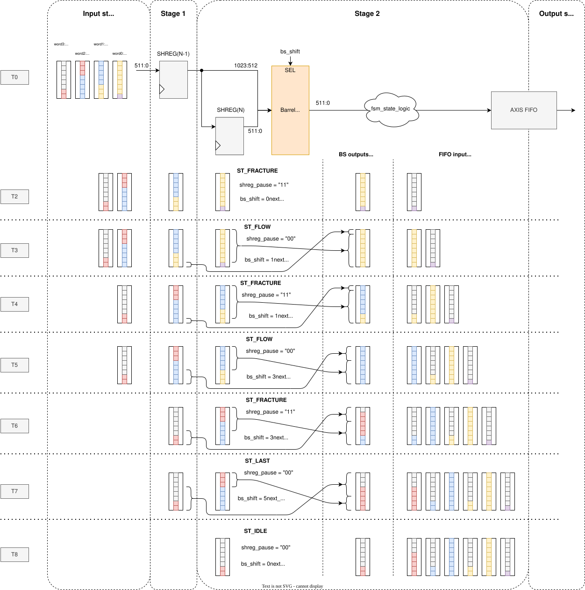
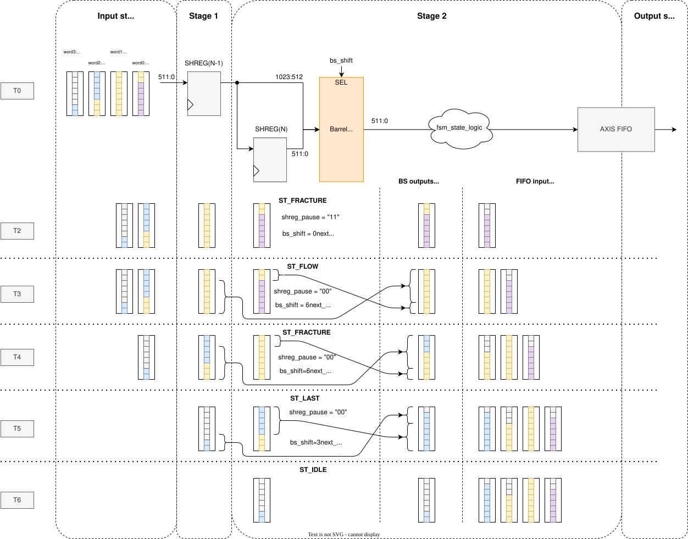
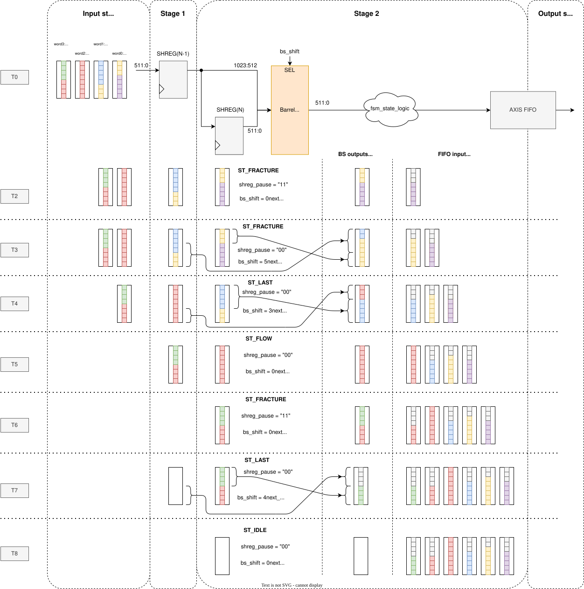

AxiS Frame Fracturer
- ENTITY AXIS_FRAME_FRACTURER IS
This module divides packets in the current word at offset specified by the RX_FRACTURE_OFFSET signal. New packets are aligned to the start of the word as expected by the AXI-Stream protocol.
Warning
While RX_AXI_TLAST and RX_FRACTURE_EN are active, RX_FRACTURE_OFFSET must be within the frame’s range (within valid bytes specified by RX_AXI_TKEEP)!
Architecture
This component’s code may be somewhat confusing due to the FSM and its complicated state transition conditions and state logic. However, the overall architecture is quite simple. The component consists of three main blocks:
Input shift register (two or more stages according to the
INPUT_REGSgeneric)Barrel Shifter (BS)
Output AXI Stream FIFO
The core of the component is the FSM that
aligns new frames after breaking to the start of the word (with the help of the BS),
sets the BS’s output TLAST and TKEEP, effectively breaking the frames, and
pauses the input shift register when data need to be stored a little longer.
In case you need to understand this component’s code or modify it, see this section below.
Generics
PortsGeneric
Type
Default
Description
AXI_TDATA_WIDTH
natural
512
AXI-Stream data bus width in bits; must be a multiple of 8.
INPUT_REGS
natural
2
Number of input registers, must be at least 2.
DEVICE
string
“AGILEX”
Target device.
Port
Type
Mode
Description
CLK
std_logic
in
RESET
std_logic
in
=====
RX Interface
=====
=====
RX_AXI_TDATA
std_logic_vector(AXI_TDATA_WIDTH-1 downto 0)
in
RX_AXI_TKEEP
std_logic_vector(AXI_TDATA_WIDTH/8-1 downto 0)
in
RX_AXI_TLAST
std_logic
in
RX_AXI_TVALID
std_logic
in
RX_AXI_TREADY
std_logic
out
RX_FRACTURE_EN
std_logic
in
Fracture enable. Valid with RX_AXI_TVALID.
RX_FRACTURE_OFFSET
std_logic_vector(log2(AXI_TDATA_WIDTH/8)-1 downto 0)
in
Fracture offset specifies the last byte of the current frame.
=====
TX Interface
=====
=====
TX_AXI_TDATA
std_logic_vector(AXI_TDATA_WIDTH-1 downto 0)
out
TX_AXI_TKEEP
std_logic_vector(AXI_TDATA_WIDTH/8-1 downto 0)
out
TX_AXI_TLAST
std_logic
out
TX_AXI_TVALID
std_logic
out
TX_AXI_TREADY
std_logic
in
Diagrams and notes
The following diagrams illustrate various example scenarios of frame breaking. Sadly, due to the complexity of the component, not all possible scenarios are covered here (e.g., WAIT state transitions). Points to note:
In the present state, the logic of the current state takes into account the word limited by the current shift signal (bs_shift).
In the next state, the logic considers the word limited by the next shift signal (bs_shift_next). It also takes into account the current stage (stg) as, e.g., breaking in the top-most stage, requires the FSM to look at the top and second-top stages, while in some other cases (like FLOW), it needs to look further into the future.
The Pause is issued only in the FRACTURE state and only when the breaking occurs in the top-most stage of the shift register.
In the 1st example below, a Fracture is set for each word (except the last). However, note how the present state switches between FLOW and FRACTURE states, rather than being only in the FRACTURE state. A scenario where the present state remains in the FRACTURE state for two cycles is shown in the 3rd example.
{kind=link}

Example 1: A single packet with Fracture in each word
The 2nd example doesn’t issue a Fracture in the 2nd word, however, note how the state sequence switches between the FLOW and FRACTURE states very much like in the 1st example. Also, note how when the last valid word arrives at the top-most stage, the output is invalid. That is due to the present state already being in the IDLE state as this part of the packet has been sent in the previous cycle. Just another thing to take into account when messing with the state transition logic.
{kind=link}

Example 2: A single packet with no Fracture in the 2nd word
The 3rd example displays a scenario of two packets following one right after another. It also shows how a word with the end of the packet (TLAST) also has a fracture in it. This results in a different TX_TKEEP calculation (signals keep_msb_idx -> bs_tx_axi_tkeep). A situation not shown—and which could occur—is with a break in the last word of the packet where the end is also seen by the next state logic. It would occur if the first packet ended on the 3rd item (RX_TKEEP = “11110000”) or 4th (RX_TKEEP = “11111000”). However, this is only important for state transition logic—TX_TKEEP calculation is the same.
{kind=link}

Example 3: Two packets with fractures in the last word